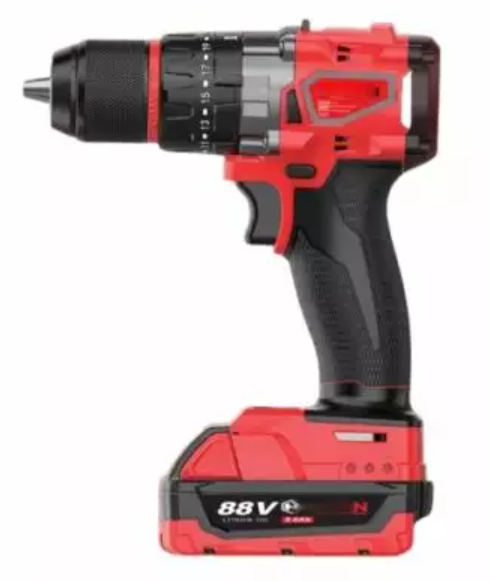
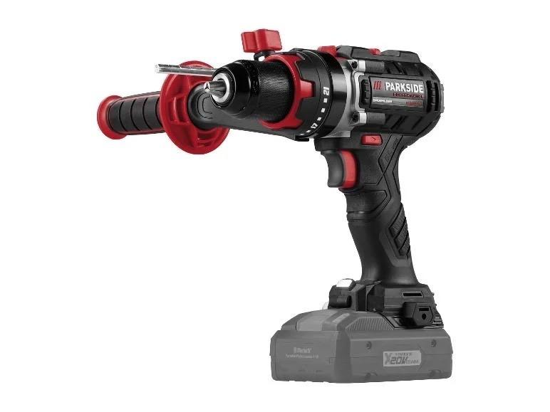
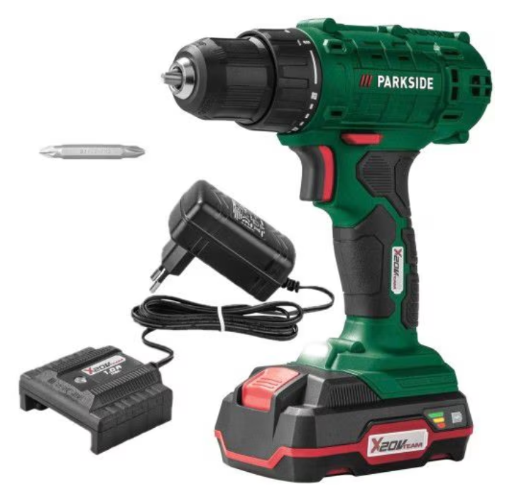

13.981 Ft
M88 FEUL Professzionális akkumulátoros fúró-csavarozó szénkefe nélküli motorral, 2 db CP5.0 akkumulátorral, kofferben SM-4401 SUPAMASTER

69.760 Ft
Parkside Performance PSBSAP 20-Li C3 akkuszoros fúrócsavarhúzó
